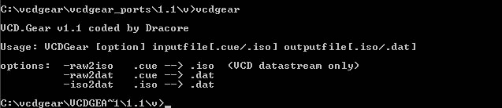

|
|
Introduction
VCDGear is a tool to extract MPEG
streams from CD images, do conversions of one video format to
another, create VideoCD images, and more!
VCDGear was developed in the late
1997 as a personal project. At that time, I had a 2x burner which
was not capable of writing VCD images in DAO. What began as a few lines of
code in QuickBasic (yes,
QB... not VB!) led to the development of ISO2VCD v0.1 which was written in
C. Suggestions from other
people to add additional features and improve performance started to pour
in. The name ISO2VCD
was dropped, and thus VCDGear v1.1 was born (actually, it was called VCD.Gear).

It had three (!!) incredible options
:) Future releases improved upon performance and added a whole slew
of features. Currently VCDGear is
supported on a number of platforms.